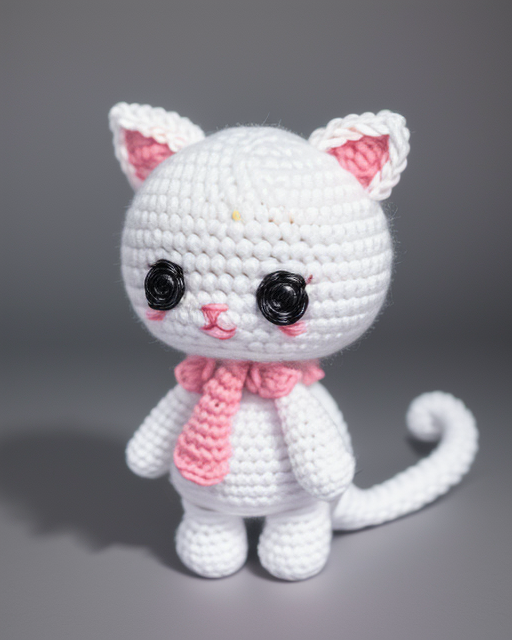

把一张 amigurumi（毛线玩偶）照片，或一句文字描述，变成一份新手可照做的钩针图解（中文术语 + 圈数 + 针数 + 组装说明），导出 PDF；并用本机 ComfyUI（FLUX）额外渲染一张成品效果图，一并放进 PDF。全程在本机运行，不调用任何云端 API。
上传照片和/或写下备注（文字优先于照片），点 Analyze。
POST /api/analyze
VisionAnalyzer 发给 Ollama：第 1 轮列出所有部件；第 2 轮拿自己的结果再对照图片自检。
网页列出每个部件（形状/颜色/大小/数量/位置），你可编辑、删除、新增。
引擎把每个部件翻译成圈/行针数，加材料、缩写、组装说明。
POST /api/generate
image_generator 把部件整理成提示词，交给本机 ComfyUI 用 FLUX 画一张成品图（可关闭）。
POST 127.0.0.1:8188/prompt
右侧实时预览（成品图 + 中文图解），fpdf2 写成 PDF，点按钮下载。
generated_patterns/*.pdf
需已安装 ollama.com 的本机服务。
代码默认用 llava；没装的话先拉取（约 4.7GB）。
ollama pull llava
# 保持服务在后台：ollama servecd crochet-ai
python -m venv venv
venv\Scripts\activate
pip install -r requirements.txt # fpdf2 / ollama / flaskpython app.py # 打开 http://localhost:5001
流程：放照片 → Analyze → 复核部件 → Generate pattern → 下载 PDF。
python image_to_pattern.py 图片.jpg "Cute Dragon"
说明：本机为 RTX 3060 Laptop（6GB 显存），FLUX fp8 需以 --lowvram 启动 ComfyUI，单张成品图约数十秒到数分钟；显存不足时可把渲染尺寸降到 512–768，或用 CROCHET_NO_IMAGE=1 跳过成品图。

这张图怎么来的：识别出的部件与颜色 → 拼成提示词 → 本机 ComfyUI 用 FLUX.1-dev 文生图 → 得到成品效果图。
它和中文图解一起，嵌入 PDF 首页，方便照图确认成品样子。
无任何云端调用；提示词模板见 image_generator.py（STYLE），可自行调整风格。